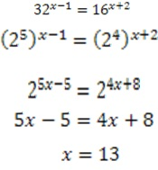
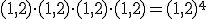
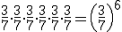
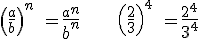
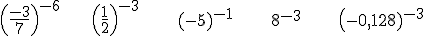
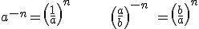
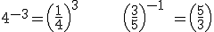
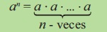

Ecuaciones exponenciales
Son aquellas cuya incógnita aparece en el exponente.
Para resolver una ecuación exponencial debemos reducir cada miembro de la ecuación a una potencia y luego igualar las bases, aplicando las propiedades correspondientes.
ejemplos:

Potencia de base real y exponente entero
Al igual que se ha hecho con los naturales y enteros, podemos multiplicar por sí mismo varias veces un número real, ese producto se puede expresar en forma de potencia.


En el caso de potencias base racional hay que tener presente que

En este apartado vamos a trabajar con potencias cuya base es cualquier número real y el exponente es un entero. Este es el caso de potencias del tipo

Relacióm entre potencias de exponente entero positivo y exponente entero negativo


Potencia de base real y exponente entero positivo
La definición de potencia de base entera y exponente entero positivo
se traslada al caso de base real. Es decir, que una potencia de base
real y exponente entero positivo no es más que la abreviatura de un
producto de factores iguales.
Si (a) es un número real y (n) es un entero positivo, la expresión (a^n) es el producto de (n) factores, todos iguales al número a. Es decir,

Los puntos suspensivos en la parte derecha de esta igualdad señalan
que se debe continuar multiplicando por a hasta completar exactamente
(n) factores.
En particular,
a^1 = a, a^2 = a ∙ a, a^3 = a ∙ a ∙ a
En la expresión an, a se llama base y n es el exponente. Este último
indica cuantas veces se toma la base como factor.